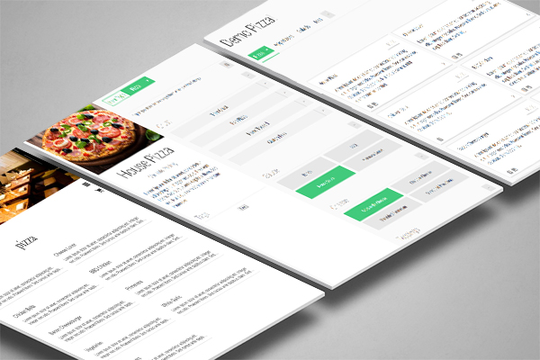
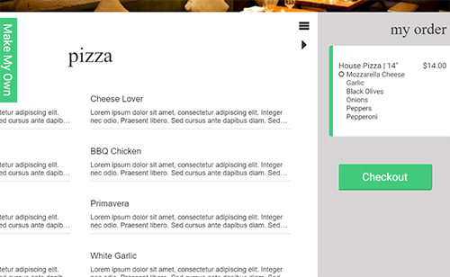
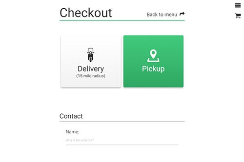
True Menu
- Custom API
- Edit-In-Place
- Cross Domain Support
True Menu is my current hobby project. It's a restful api allowing third-party restaurants to offer online orders with a single script tag inclusion. It also highlights the power of angular with an edit in place management system.
Mobile UI
This project was an experiment in mobile UI design. I wanted to create something that uses modern css animations in combination with contextual icons and menus. I also introducted vector graphics, and icon font sets.
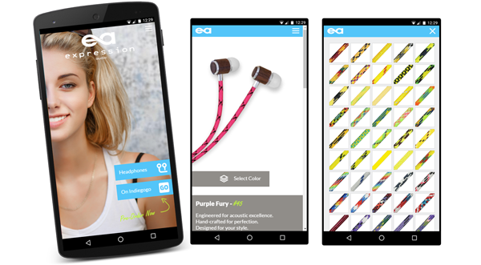
- Mobile Centric Design
- Vector Graphics
- CSS Animations
Explainer Video
What project is complete without an explainer video? I created some interesting parallax effects, and combined them with a handful of stock videos, to create something halfway decent. No need to outsource this one. And a $5 voiceover from fiverr goes a long way :D
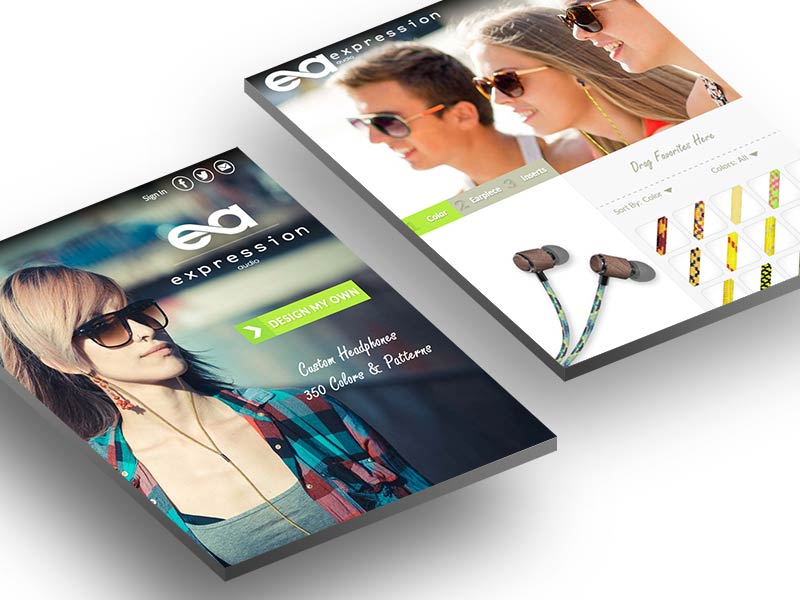
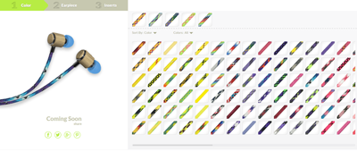
Expression Audio
- Flat Design
- Product Customization
- Facebook Integration
Created as compact informational page for a crowdfunding campaign; this project is an interesting example of focused site design and a robust product customization tool.
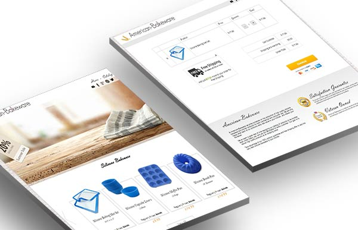
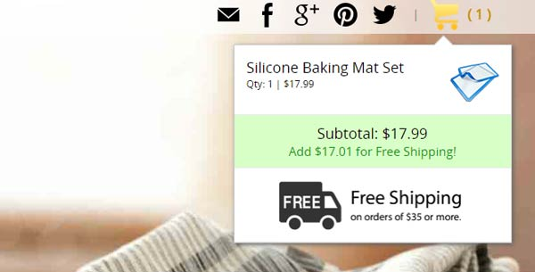
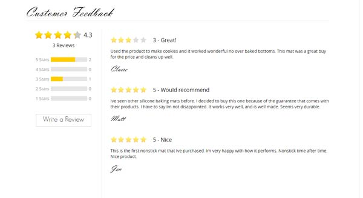
American Bakeware
- ecommerce
- Custom Shopping Cart
- PayPal Integration
This project was created as a fully functional e-commerce site, with a custom, designed and coded, shopping cart. It was also built from the frame up for google search optimization including rich snippets.
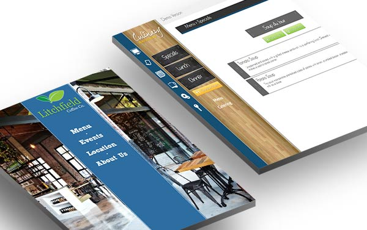
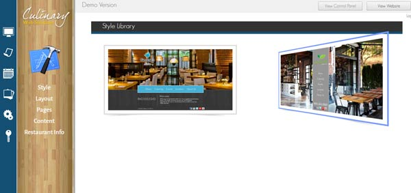

Culinary Web Solutions
- Dynamic Designs
- Point/Click Backend
- Ajax Control Panel
Culinary Web Solutions was my among my first projects, and ironically one of the largest and most robust. The concept was to create a self contained restaurant website; complete with a simple point and click backend system. It was designed to utilize a library of templates, and allow content management without requiring any skill on the part of the client.